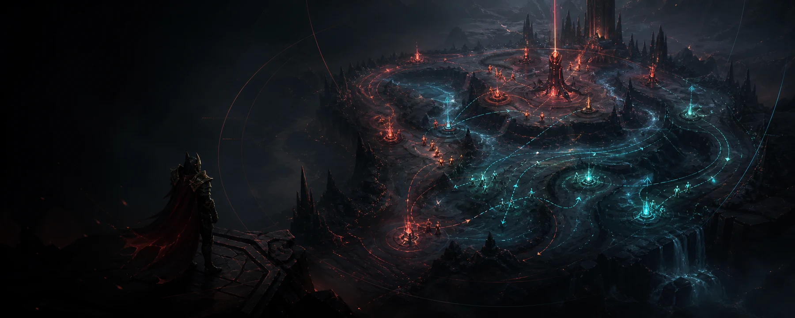
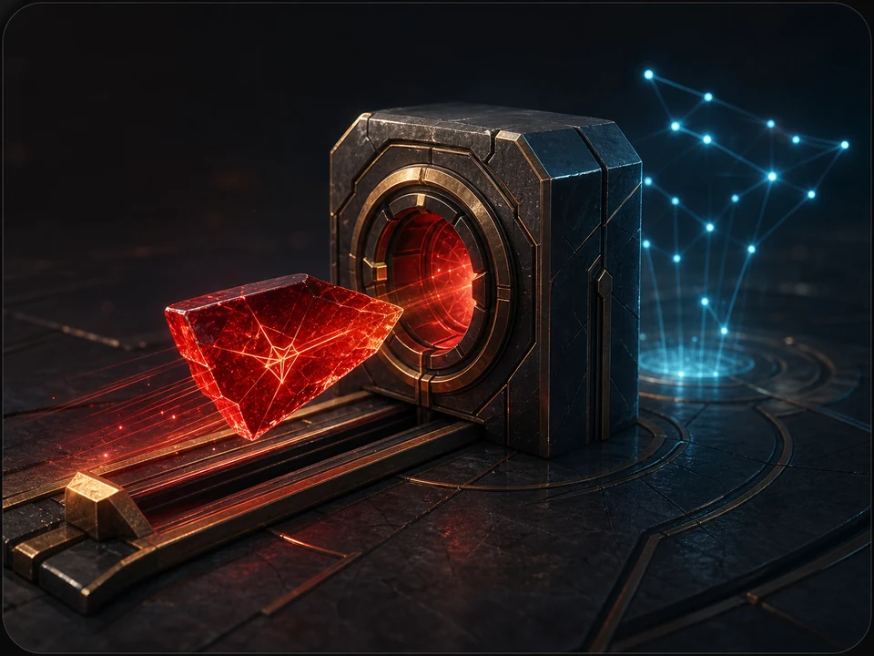
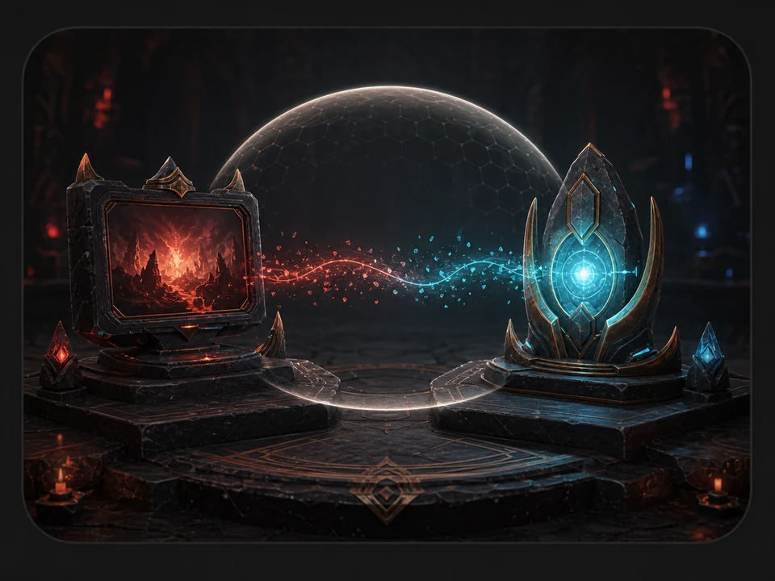

GSI listenerStandby
COMMAND CENTER

MATCH READINESS
We’ll walk you through every requirement.
COACH PROFILE
SIGNAL LOG
AUTOMATIC COUNTER-PICK ENGINE
Start the coach and enter hero selection. Picks appear here automatically—there is nothing to enter or click.
LIVE RANKING
DEDICATED STRATEGY MODULES
Only enabled heroes preload professional benchmarks, keeping startup focused and fast.
GUIDED SETUP
No terminal needed. We’ll explain every permission, where to find each value, and what stays on your computer.
WELCOME ABOARD
GankMeDaddy listens to the match data Dota already exposes, compares your state with role-aware benchmarks, and speaks useful cues. Here’s everything you’ll provide:

STEP 2 · STRATZ
STRATZ supplies item timings, builds, win rates, and role-aware professional benchmarks. GankMeDaddy only needs a personal API token.
Open STRATZ token pageIf a token is already secured, leave this blank to keep it.

STEP 3 · YOUR GAME
Your STRATZ account ID is the shorter numeric ID shown in a STRATZ player URL—not the 17-digit SteamID64. The Dota folder should contain game\dota.
stratz.com/players/123456789C:\Program Files (x86)\Steam\steamapps\common\dota 2 betaIf you use another Steam library, choose that library’s steamapps\common\dota 2 beta folder.
STEP 4 · LOCAL TELEMETRY
This creates one readable text file inside Dota’s configuration folder. It tells Dota to send live match state to this app on your own computer.
STEP 5 · STEAM
This is the only manual Dota setting. It enables Game State Integration when Dota starts.
Right-click Dota 2 and choose Properties.
Stay on the General tab and scroll down.
Keep any options you already use.
-gamestateintegrationFINAL CHECK
Complete the items below, then run a voice test. Dota will show as connected after it sends its first telemetry update.